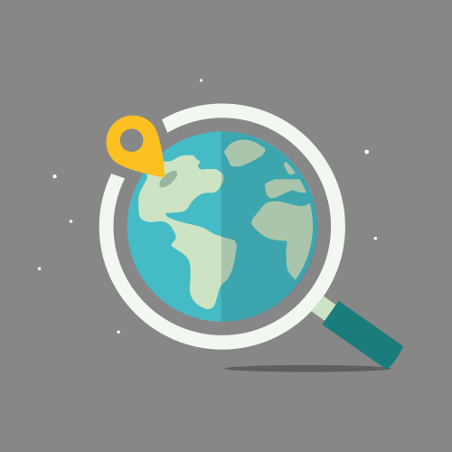

"El mapa de los guardianes de Córdoba"
¡Escuchad con atención, equipo! Después de seguir todas las huellas del dragón Azahar y descubrir los secretos de nuestra ciudad, ha llegado el momento de cumplir nuestra última misión.
¿Sabéis qué vamos a hacer? ¡Vamos a fabricar entre todos el Mapa Mágico de los Guardianes de Córdoba!
¿Cómo lo vamos a hacer?
¡Meteremos vuestros tesoros! En el mapa digital vamos a colgar todas las cosas chulas que habéis hecho: vuestras postales del dragón, los consejos que grabasteis para cuidar los monumentos y todas vuestras historias...
Y también, señalaremos los puntos secretos en los que vimos al dragón Azahar: la Mezquita, el Puente Romano y los Patios para que nadie se pierda. ¡Será nuestra guía secreta de la ciudad!
¡Y mucho cuidado!
Como somos Guardianes expertos, este mapa tiene un hechizo de seguridad:
- Nombres en clave: firmaremos con el nombre de “Guardianes”.
- Dar las gracias: Como hemos usado fotos de otros artistas de internet, pondremos una nota de agradecimiento, porque los guardianes siempre son respetuosos.
Cuando terminemos, lo proyectaremos en la pizarra digital y... ¡BUM! Todo el mundo sabrá que Córdoba está a salvo gracias a nosotros.
¿Estáis listos para empezar a diseñar? ¡A por ello!

Imagen de Localización, Tierra y Mapa. De uso gratuito. Imagen de Megan Rexazin Conde en Pixabay.
Lectura facilitada
Ahora vamos a cumplir la última misión.
Vamos a hacer el Mapa de los Guardianes de Córdoba.
¿Cómo lo haremos?
- Pondremos vuestros trabajos en el mapa: las postales y los consejos.
- Marcaremos los sitios secretos del dragón: la Mezquita, el Puente y los Patios.
- Será nuestra guía secreta de la ciudad.
Las reglas de seguridad
Para que el mapa sea seguro, usaremos un hechizo:
- Nombres secretos: No pongas tu nombre real. Firma como "Guardianes".
- Dar las gracias: Daremos las gracias a los artistas que nos dejaron sus fotos.
El final de la aventura
Veremos el mapa en la pizarra digital.
¡Todos sabrán que somos los mejores Guardianes de Córdoba!
¿Empezamos a diseñar? ¡A por ello!

Imagen de Localización, Tierra y Mapa. De uso gratuito. Imagen de Megan Rexazin Conde en Pixabay